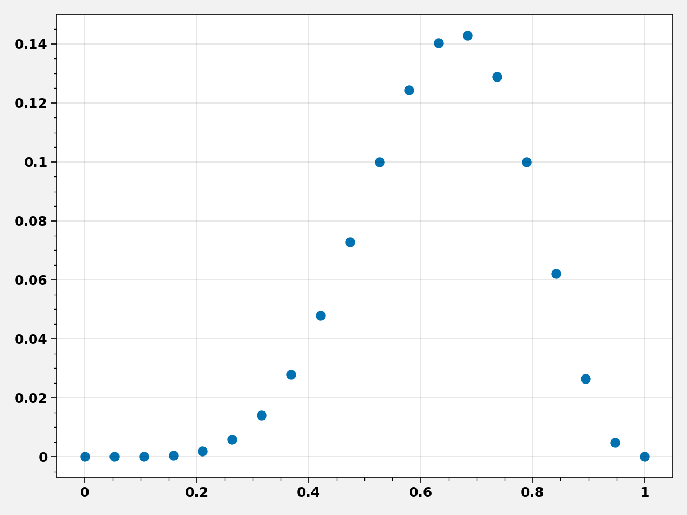

Chapter 02 - Small Worlds and Large Worlds¶
import warnings
import pandas as pd
import proplot as plot
import pyro
import pyro.distributions as dist
import pyro.infer
import pyro.optim
import torch
import torch.distributions.constraints as constraints
import torch.tensor as tensor
from pyro.contrib.autoguide import AutoLaplaceApproximation
warnings.filterwarnings("ignore")
%pylab inline
pyro.set_rng_seed(42)
plt.rcParams["axes.labelweight"] = "bold"
plt.rcParams["font.weight"] = "bold"
/opt/hostedtoolcache/Python/3.7.7/x64/lib/python3.7/site-packages/proplot/config.py:1454: ProPlotWarning: Rebuilding font cache.
Populating the interactive namespace from numpy and matplotlib
Code 2.1¶
ways = tensor([0, 3, 8, 9, 0], dtype=float)
ways / ways.sum()
tensor([0.0000, 0.1500, 0.4000, 0.4500, 0.0000], dtype=torch.float64)
Code 2.2¶
dist.Binomial(total_count=9, probs=0.5).log_prob(tensor(6, dtype=float)).exp()
tensor(0.1641, dtype=torch.float64)
Code 2.3¶
p_grid = torch.linspace(start=0, end=1, steps=20)
prior = tensor([1.0] * 20)
likelihood = dist.Binomial(total_count=9, probs=p_grid).log_prob(tensor(6.0)).exp()
unstd_posterior = likelihood * prior
posterior = unstd_posterior / unstd_posterior.sum()
Figure 2.7¶
fig, ax = plt.subplots()
ax.scatter(p_grid, posterior)
fig.tight_layout()
Code 2.5¶
prior[prior < 0.5] = 0
prior[prior >= 0.5] = 1
prior = torch.exp(-5 * torch.abs(prior - 0.5))
likelihood = dist.Binomial(total_count=9, probs=p_grid).log_prob(tensor(6.0)).exp()
unstd_posterior = likelihood * prior
posterior = unstd_posterior / unstd_posterior.sum()
prior
tensor([0.0821, 0.0821, 0.0821, 0.0821, 0.0821, 0.0821, 0.0821, 0.0821, 0.0821,
0.0821, 0.0821, 0.0821, 0.0821, 0.0821, 0.0821, 0.0821, 0.0821, 0.0821,
0.0821, 0.0821])
fig, ax = plt.subplots()
ax.scatter(p_grid, posterior)
fig.tight_layout()

Code 2.6¶
def summary(samples, prob=0.95):
site_stats = {}
for k, v in samples.items():
site_stats[k] = {
"mean": torch.mean(v, 0).data.numpy(),
"std": torch.std(v, 0).data.numpy(),
"{:.1f}%".format(100 * (1 - prob)): v.kthvalue(
int(len(v) * (1 - prob)), dim=0
)[0].data.numpy(),
"{:.1f}%".format(100 * prob): v.kthvalue(int(len(v) * prob), dim=0)[
0
].data.numpy(),
}
return pd.DataFrame(site_stats)
def model(n):
p = pyro.sample("p", dist.Uniform(0, 1.0))
return pyro.sample("w", dist.Binomial(n, p))
def guide(n):
p_param = pyro.param(
"p_param", torch.tensor(0.1), constraint=constraints.unit_interval
)
return pyro.sample("p", dist.Delta(p_param))
conditioned = pyro.condition(model, data={"w": tensor(6.0)})
pyro.clear_param_store()
svi = pyro.infer.SVI(
model=conditioned,
guide=guide,
optim=pyro.optim.SGD({"lr": 0.001, "momentum": 0.1}),
loss=pyro.infer.Trace_ELBO(),
)
n = 9
losses, p_param = [], []
num_steps = 5000
for t in range(num_steps):
losses.append(svi.step(n))
plt.plot(losses)
plt.title("ELBO")
plt.xlabel("step")
plt.ylabel("loss")
plt.tight_layout()
print("p = ", pyro.param("p_param").item())
p = 0.6666584014892578
# Need this for estinamting standard deviation of the posterior
# See: https://forum.pyro.ai/t/standard-deviation-of-the-posterior/1916
n = 9
w = 6.0
pyro.clear_param_store()
conditioned = pyro.condition(model, data={"w": tensor(w)})
guide = pyro.infer.autoguide.AutoLaplaceApproximation(conditioned)
laplace_guide = guide.laplace_approximation(n)
pred = pyro.infer.Predictive(laplace_guide, num_samples=10000)
p_summary = summary(pred.get_samples(), 0.945).loc[:, ["p"]]
p_posterior_mean = tensor(p_summary.loc["mean", "p"])
p_posterior_std = tensor(p_summary.loc["std", "p"])
p_summary
| p | |
|---|---|
| mean | 0.7214124 |
| std | 0.12918343 |
| 5.5% | 0.48164606 |
| 94.5% | 0.8951862 |
Code 2.7¶
w = 6
n = 9
p_grid = torch.linspace(0.0, 1.0, 100)
# exact posterior
exact_density = dist.Beta(w + 1, n - w + 1).log_prob(p_grid).exp()
quad_density = dist.Normal(p_posterior_mean, p_posterior_std).log_prob(p_grid).exp()
fig, ax = plt.subplots(figsize=(4, 4))
ax.plot(p_grid, exact_density, label="exact posterior")
ax.plot(p_grid, quad_density, label="quadratic approximation")
ax.legend(loc=2, frameon=False)
ax.set_title("n = 9")
fig.tight_layout()
# play with w, n
fig = plt.figure(figsize=(10, 3))
for i, (w, n) in enumerate([(6.0, 9), (12.0, 18), (24.0, 36)]):
ax = plt.subplot(1, 3, i + 1)
ax.set_title("n = {}".format(n))
exact_density = dist.Beta(w + 1, n - w + 1).log_prob(p_grid).exp()
pyro.clear_param_store()
conditioned = pyro.condition(model, data={"w": tensor(w)})
guide = pyro.infer.autoguide.AutoLaplaceApproximation(conditioned)
laplace_guide = guide.laplace_approximation(n)
pred = pyro.infer.Predictive(laplace_guide, num_samples=10000)
p_summary = summary(pred.get_samples(), 0.945).loc[:, ["p"]]
p_posterior_mean = tensor(p_summary.loc["mean", "p"])
p_posterior_std = tensor(p_summary.loc["std", "p"])
quad_density = dist.Normal(p_posterior_mean, p_posterior_std).log_prob(p_grid).exp()
ax.plot(p_grid, exact_density, label="exact posterior")
ax.plot(p_grid, quad_density, label="quadratic approximation")
ax.legend(loc=2, frameon=False)
fig.tight_layout()
# TODO: